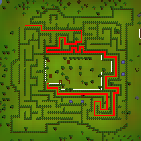
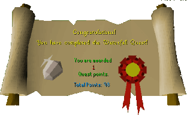

Waterfall Quest
Description: Investigate the death of elven leaders of old. Search for the elf King Baxtorian's tomb and discover the mysterious hidden treasure of the waterfall.
Difficulty: Experienced
Length: Long
Items & Skills Needed:
Starting Location: North of Baxtorian Falls, speak to Almera
Reward: 1 Quest point, 13,750 Attack XP, 13,750 Strength XP, 2 cut diamonds, 2 gold bars, 40 mithril seeds (allows you to grow flowers)
Instructions:
Almera's house is on top.
Hadley's house is in the bottom left corner.
The grave is the grey circle place with a walk way to the circle.

Talk to Almera in her house and she will tell you her son is looking for treasure at the waterfall. There is a raft behind the house. Get on it, and it will take you downstream.
The raft will crash and break in half, and you will see the boy. Talk to him.
Once you are done talking to him, go down the waterfall to the end of the island, and you'll see a rock across from you. Use the rope with the rock and you will go across.
Note: Climbing the dead tree at the top of the waterfall deals 8 damage, and opening the door on the ledge without Glarial's amulet deals 5 damage.
Now use the rope on the dead tree, and you will appear by a doorway. Get in the barrel, and you will end up by a fence. Follow it north to a house.
Inside the house talk to Hadley, then go north and talk to Almera and then go back to Hadley's house. Go upstairs, get the book called "Book on Baxtorian" and read it. Go back downstairs and speak to Hadley again. If you want you can go by the grave east of Hadley's house.
Go to Gnome Village, not Gnome Stronghold. Go through the maze and reach the cave. (Use the maze map below.)

Note: If you haven't already started or completed Tree Gnome Village, consider going inside to and talking to King Bolren start the quest. This allows you to use Elkoy's shortcut for future use.
Once you get to the cave, go down. There are two ways to go, left or right. Go to the right. Search the crates and boxes and find the key, then go to the other side and use the key with the jail door. Go inside the jail and talk to the gnome, get the pebble, then climb up the ladder and get out the same way you came in.
Put all of your armour, weapons, and your other stuff in the bank, just bring food and the pebble. Now go to the grave east of Hadley's house. (It won't let you in with armour or weapons.)
Use the pebble with the grave. You appear in a cave. Go straight, open the chest, and you will get an amulet. Then go the other way, open the coffin, and it will give you an urn. Now climb the ladder and get out.
Keep the urn and amulet on you and go get your armour and weapon, food, rope, stat restore potion, and the 18 runes (6 water, 6 air, 6 earth) that were mentioned earlier out of the bank. Go back to Almera's house and put on the amulet you got from the grave.
Go get on the raft and you will appear on the island again, go to the end of the island, use the rope with the rock again and go across. Use the rope with the dead tree that's on the edge of the waterfall. This time, you will appear on the waterfall in front of a door (you must have the amulet from the grave to enter). Open the door.
When you enter the waterfall, there will be shadow spiders, fire giants, and mage skeletons. There are three ways to go (left, straight, or right), you want to go to the right. Search the only miscolored crate for a key.
Exit the right side and go to the left side. There are fire giants in this room but you can run through them to a door in the right corner of the room. Use the key on the door to go through. There will be another door that you have to use the key with, then you should be in the room.
This is where you use your runes. There are 6 pillars: on each pillar place 1 water rune, 1 air rune, and 1 earth rune, and finally use Glarial's amulet on the Statue of Glarial. If you did this right the floor will rise.
Go up to the trophy, use the urn with the trophy and you have completed the quest! If you are unsuccessful you must put your armour and weapon back in the bank and go back to the grave and get the amulet again.
Congratulations, Quest Complete!

This quest guide was written by thehellkeeper and zone_ant. Thanks to Thunderdog, External, DRAVAN, and Koppen for corrections.
This quest guide was entered into the database on Wed, Apr 07, 2004, at 06:53:10 PM by DRAVAN and CJH and was last updated on Mon, Aug 02, 2004, at 08:52:56 AM.